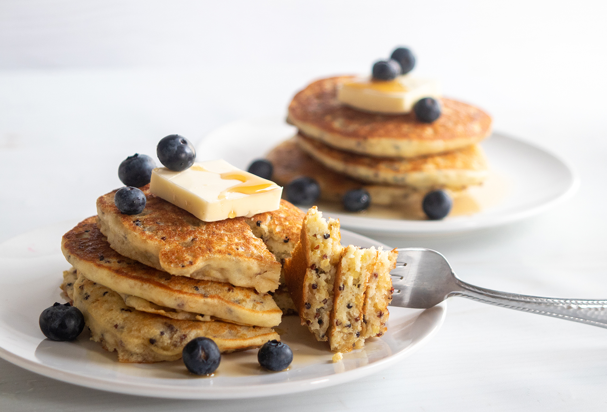

Quinoa Pancakes Recipe

Ingredients
- 1 ½ cups quinoa flour
- 1 ½ teaspoons baking powder
- ½ teaspoon saltr
- 1 ¼ cups flaxseed milk
- 2 eggs
- 1
1/2
warm milk
- 1/3 cup butter, melted
- 1 teaspoon vanilla extract
Directions
- In a large bowl, mix together flour, salt, baking powder and sugar; set aside. Preheat waffle iron to desired temperature.
- In a separate bowl, beat the eggs. Stir in the milk, butter and vanilla. Pour the milk mixture into the flour mixture; beat until blended.
- Ladle the batter into a preheated waffle iron. Cook the waffles until golden and crisp. Serve immediately.
Github